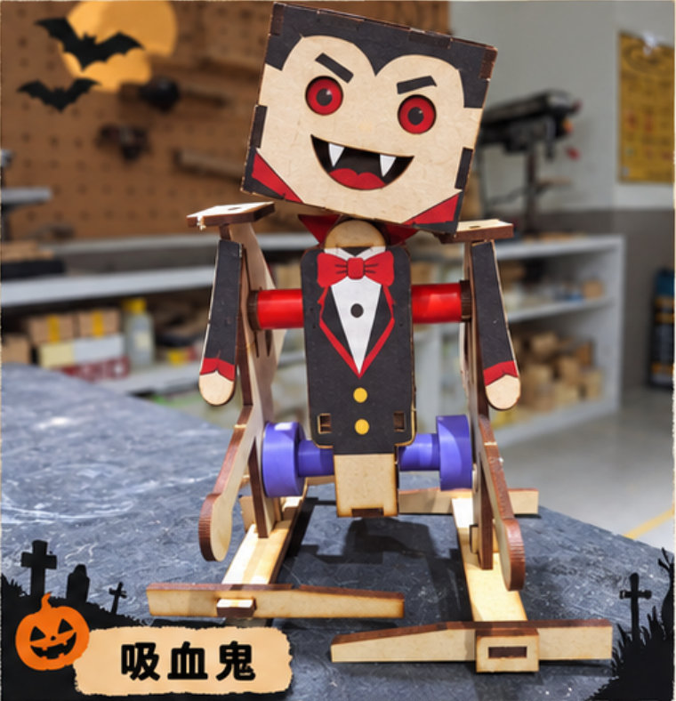
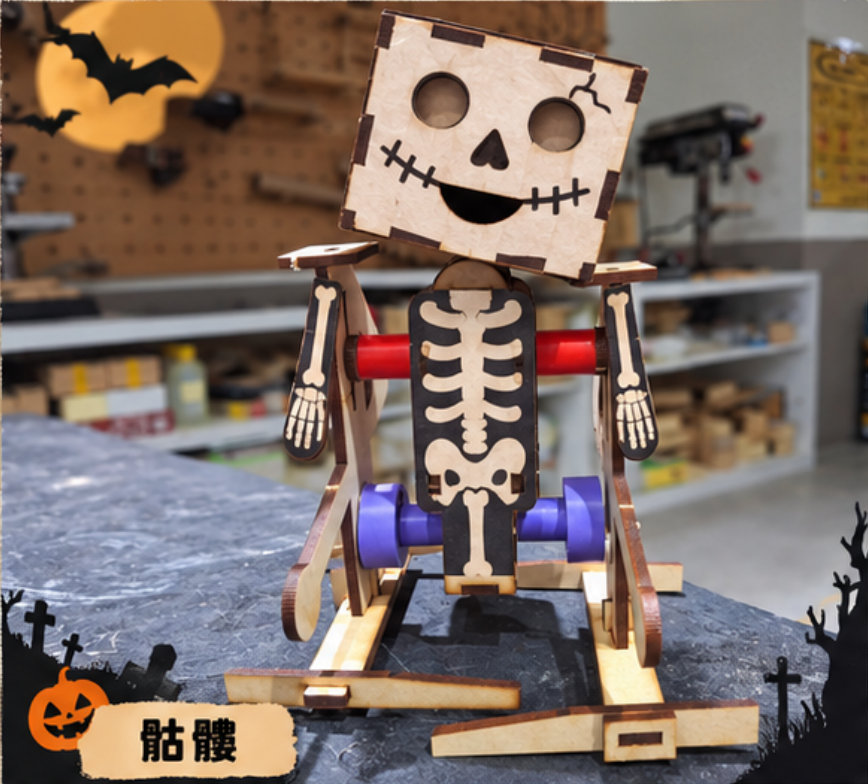
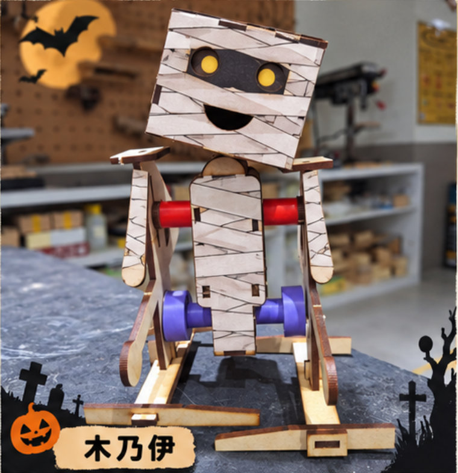
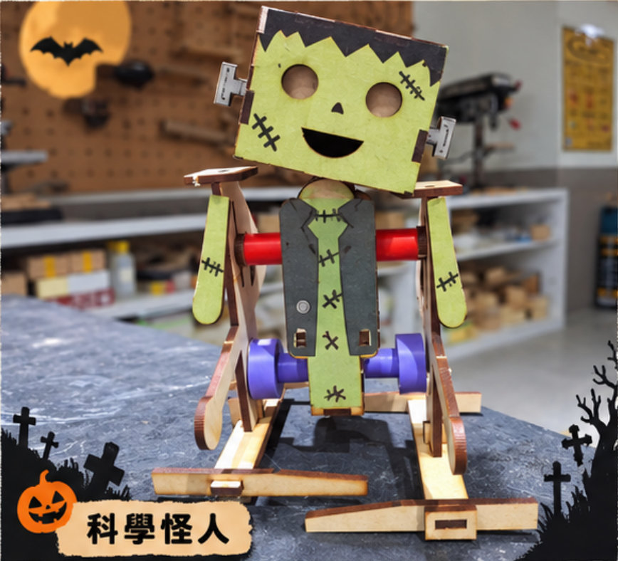

萬聖節 搖頭晃腦步行機器人
一顆小小的 TT 減速馬達，加上兩個 偏心輪 和幾根 連桿， 就能把「轉圈圈」變成「走路」！跟著這個網站，從認識零件、看懂原理，到親手組裝並改造成你專屬的萬聖節怪物。

五站任務，打造你的怪物機器人
每一站都有互動內容。完成組裝步驟時記得按下「我完成了」，網站會幫你記錄進度！
認識材料
清點木製零件、馬達與五金，勾選確認不缺件
理解原理
減速齒輪、偏心輪、連桿與重心移轉
動手組裝
7 步驟圖解＋關鍵防呆提醒
測試調校
依故障排除表找出問題並修正
創意改造
只換外觀、不改機構，變身萬聖節怪物
知識目標
說明減速馬達「轉速換扭矩」的原理，以及偏心輪如何把旋轉運動轉換成往復擺動。
技能目標
能正確焊接電源線、組裝榫接結構，並分辨「固定螺絲」與「活動關節螺絲」的鬆緊差異。
態度目標
遇到問題能系統化除錯，並在「工程限制」下發揮創意完成造型設計。
材料圖鑑：開工前先清點！
點擊照片可放大檢視；點左上角方框勾選「已確認」。缺件或斷裂請立刻舉手告訴老師。
※ 零件名稱為教學用稱呼，數量依照片所示，請以實際套件為準。木板邊緣的焦痕是雷射切割留下的，屬正常現象。
機構原理：旋轉怎麼變成走路？
整隻機器人只有一顆馬達。祕密藏在三個關鍵：減速齒輪、偏心輪、連桿。
⚙️ 認識 TT 減速馬達 動力核心
TT 馬達是創客最愛用的黃色小馬達，內部包含了微型直流馬達與多組減速齒輪。

📊 常見 TT 馬達齒輪比比較
| 齒輪比 | 轉速 (3V) | 扭矩 (力量) | 適用情境 |
|---|---|---|---|
| 1:48 (最常見) | 約 130 rpm (較快) | 較小 | 一般四輪小車、避障車 |
| 1:120 | 約 50 rpm (中等) | 大 | 爬坡車、越野車 |
| 1:220 | 約 25 rpm (最慢) | 極大 | 步行機器人、重型機構 (需穩定) |
⚙️ 減速齒輪：轉速換扭矩 動力核心
小直流馬達本身轉得超快（每分鐘數千轉），但力氣（扭矩）很小，直接拿來推木頭機身會馬上卡住。
黃色 TT 馬達裡面藏著一組減速齒輪：讓「小齒輪帶大齒輪」，每經過一次，轉速變慢、力氣變大。
- 常見 TT 馬達齒輪比約 1:48，轉速從數千轉降到約 100–200 轉/分。
- 慢慢走的機器人才穩；轉太快反而會亂跳、摔倒。
- 👉 拖動右邊滑桿，觀察齒輪比改變時轉速與扭矩的變化。
互動實驗 ① 齒輪比模擬器
LIVE🟢 偏心輪＋連桿：旋轉變擺動 運動轉換
馬達輸出的是 360° 圓周運動，但走路需要雙腳前後交替擺動。
綠色的偏心輪，連接孔不在圓心。輪子轉一圈，這個孔就畫出一個圓；接在孔上的腿就被「推出去、拉回來」，形成跨步。
- 偏心距（孔到圓心的距離）越大，步伐越大，但也越容易晃倒。
- 左右兩個偏心孔要相差 180°，一腳在前時另一腳在後。
- 上方紅色套管是「肩膀支點」，腿穿過它擺動，同時讓手臂反向揮動。
互動實驗 ② 偏心輪軌跡
LIVE⚖️ 重心移轉：為什麼要「搖頭晃腦」？ 平衡與摩擦
走路時，一隻腳要抬起來往前，身體重量就必須先移到另一隻腳上。機器人左右搖晃，正是在做這件事。
- 重心壓住的那隻大腳掌，靠靜摩擦力抓住地面，當作推進的支點。
- 另一隻腳變輕，被連桿帶著往前移動 → 完成一步。
- 桌面太滑（玻璃）或腳掌不平，摩擦力不足 → 原地打滑、不前進。
- 頭太重或前後不平衡 → 重心跑出腳掌範圍 → 撲倒。
正面觀察：重心左右移動
LIVE🔍 生活中的偏心輪、齒輪與連桿
滑過（或點一下）卡片翻面看答案
手把／手機震動
裡面藏了什麼？
偏心重塊
馬達軸上裝著重心不在中心的金屬塊，高速旋轉時離心力不平衡，就產生震動。
腳踏車
爬坡為什麼要換檔？
曲柄＋齒輪比
踏板曲柄就是偏心連桿；爬坡換到大齒輪，犧牲速度換取省力。
汽車引擎
活塞怎麼讓輪子轉？
曲柄滑塊機構
活塞上下往復 → 連桿 → 曲軸旋轉。是我們機器人的反向應用。
縫紉機
針為什麼能上下跳？
偏心輪＋連桿
馬達帶動偏心輪旋轉，透過連桿把旋轉變成針的上下往復運動。
機構動態實驗室：親手調參數
側面視角的完整連桿模擬。試試看把相位差改成 0°，機器人會發生什麼事？
▶ 播放控制
🔁 左右偏心輪相位差
📖 現在發生什麼事？
實作工坊：7 步驟圖解組裝
每完成一個小步驟就點一下打勾；整個步驟完成後按「我完成了」。進度會自動儲存在這台電腦。
故障排除：當個機器人醫生
機器人不聽話？先看症狀，再找原因，最後動手修。工程師就是這樣除錯的！
創客改造：只換外觀，不改機構
骷髏、木乃伊、科學怪人、吸血鬼……你想變成誰？但要記得遵守工程限制條件！

白色骨頭貼紙，輕又醒目

紙膠帶纏繞，注意不要包住關節

綠色臉＋縫線，螺栓用畫的
披風改用平貼，避免勾到連桿
👆 點左邊機器人的部位
綠色＝可自由裝飾；黃色＝限制裝飾；紅色＝禁止裝飾，必須保持淨空。
闖關小測驗：你真的懂了嗎？
6 題觀念題，答完立即看解析。全對可以解鎖「機構大師」稱號！